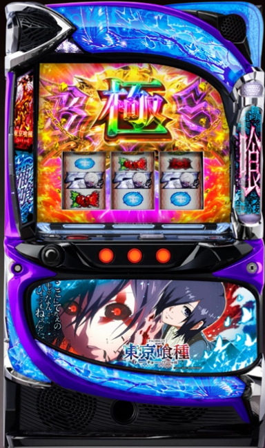

目次

L 東京喰種 TOKYO GHOUL ｜ クロスアルファ（CROSSALPHA）
設定6 機械割
114.9%
設定1 機械割
97.5%
CZ天井
600G+α
AT天井
1,200G+α
AT純増
約4.0枚/G
回転数/50枚
約31G
L東京喰種 スペック・機械割
AT初当たり確率・CZ確率・機械割
| 設定 | AT初当たり | CZ合算 | 機械割 |
|---|---|---|---|
| 1 | 1/394.4 | 1/262.6 | 97.5% |
| 2 | 1/380.5 | 1/255.6 | 99.0% |
| 3 | 1/357.0 | 1/246.5 | 101.6% |
| 4 | 1/325.9 | 1/233.1 | 105.6% |
| 5 | 1/291.2 | 1/216.4 | 110.3% |
| 6 | 1/261.3 | 1/203.7 | 114.9% |
※ 掲載数値は公開解析情報に基づきます。実際の数値と異なる場合があります。
設定3が機械割の境界線：設定3以上（101.6%）で機械割100%を超えます。AT初当たり確率とCZ確率の両方に大きな設定差があり、高設定ほど初当たりが軽くなります。
遊技時間別・理論差枚数の目安
G/時間
| 設定 | 機械割 | 3時間 | 6時間 | 12時間 |
|---|---|---|---|---|
| 1 | ||||
| 2 | ||||
| 3 | ||||
| 4 | ||||
| 5 | ||||
| 6 |
※ 本表はあくまで理論上の参考値です。実際の差枚数は確率の波により大きく上下します。
※ 遊技の判断はご自身の責任でお願いします。当サイトは一切の責任を負いかねます。
※ 遊技の判断はご自身の責任でお願いします。当サイトは一切の責任を負いかねます。
交換レートを選択
枚交換
交換額（pt）の目安
交換レート：等価（50枚 / 1,000pt）
| 設定 | 機械割 | 3時間 | 6時間 | 12時間 |
|---|---|---|---|---|
| 1 | ||||
| 2 | ||||
| 3 | ||||
| 4 | ||||
| 5 | ||||
| 6 |
L東京喰種 小役確率
小役確率（全設定共通）
| 小役 | 確率 | 備考 |
|---|---|---|
| リプレイ | 1/7.3 | 設定差なし |
| 弱チェリー | 1/70.3 | 設定差なし |
| スイカ | 1/100.5 | 設定差なし |
| 斜めベル | 1/131.1 | 設定差なし |
| 強チェリー | 1/356.2 | CZ・AT抽選の契機 |
小役確率に設定差なし：本機の小役確率は全設定共通です。設定判別には小役カウントではなく、AT初当たり確率・CZ確率・設定示唆演出を重視してください。
設定差のある確率
| 設定 | AT直撃確率 | AT引き戻し率 | 下段リプレイ | 初当りエピボ |
|---|---|---|---|---|
| 1 | 1/28460.6 | 7.81% | 1/1260.3 | 1/6620.2 |
| 2 | — | — | ||
| 3 | — | — | ||
| 4 | — | — | ||
| 5 | — | — | ||
| 6 | 1/7036.8 | 15.23% | 1/1024.0 | 1/2639.5 |
※ AT直撃はリプレイ成立時の一部で抽選。設定1と6で約4倍の差があります。
L東京喰種 設定判別ポイント
- ① AT初当たり確率を主要指標にする 設定1（1/394.4）〜設定6（1/261.3）で約34%の設定差があります。設定5〜6目安は1/300前後。
- ② CZ合算確率でクロスチェック 設定1（1/262.6）〜設定6（1/203.7）で約22%の差。弱チェリー成立時のCZ当選率は設定1と6で約2倍の差があります。
- ③ AT終了画面で設定を示唆 あんていく全員集合＝設定6濃厚、金枠の金木研&霧嶋薫香＝設定4以上濃厚。四方蓮示&イトリ&ウタ＝高設定示唆（強）。
- ④ トロフィー・獲得枚数表示をチェック 虹トロフィー＝設定6濃厚。「456OVER」表示＝設定4以上濃厚、「666OVER」「1000-7OVER」＝設定6濃厚。
- ⑤ エンディング中のカード示唆 白カード＝奇数設定示唆、青カード＝偶数設定示唆、赤カード＝高設定示唆。銀/金カード＝設定3以上濃厚、虹カード＝設定6濃厚。
- ⑥ AT引き戻し率に注目 設定1（7.81%）〜設定6（15.23%）で約2倍の差。AT終了後に即引き戻しが頻発する場合は高設定期待度UP。
L東京喰種 終了画面・トロフィー
AT終了画面の設定示唆
| 画面 | 示唆内容 |
|---|---|
| 金木研 | デフォルト |
| 亜門鋼太朗＆真戸暁 | 奇数設定示唆 |
| 鈴屋什造＆篠原幸紀 | 偶数設定示唆 |
| 神代利世 | 設定1否定 |
| 笛口雛実＆笛口リョーコ | 高設定示唆（弱） |
| ウタ＆イトリ＆四方蓮示 | 高設定示唆（強） |
| 金木研＆霧嶋董香（金枠） | 設定4以上濃厚 |
| あんていく全員集合（虹枠） | 設定6濃厚 |
CZ終了画面（エンドカード）
CZ失敗時にPUSHボタンを押すとエンドカードが出現。モード示唆と設定示唆の2種類が存在します。
| キャラクター | 示唆内容 |
|---|---|
| 金木研① | デフォルト |
| 霧嶋董香 | 通常B以上示唆 |
| 笛口雛実 | 通常B以上示唆 |
| 亜門鋼太朗 | 通常B以上濃厚 |
| 真戸呉緒 | 通常C以上濃厚 |
| 金木研（喰種ver.） | チャンス以上濃厚 |
| 霧嶋董香（喰種ver.） | チャンス以上濃厚 |
| 月山習 | 天国準備以上濃厚 |
| 神代利世 | 天国濃厚 |
| 設定示唆パターン | |
| 鈴屋什造 | 偶数設定濃厚 |
| 梟 | 設定4以上 |
| 有馬貴将 | 設定6 |
ナミちゃんトロフィー
AT終了画面で出現する可能性あり。トロフィーの色で設定を示唆します。
| トロフィー色 | 示唆内容 |
|---|---|
| 黒 | 次回終了画面でトロフィー出現 |
| 銅 | 設定2以上 |
| 銀 | 設定3以上 |
| 金 | 設定4以上 |
| 特殊（喰） | 設定5以上 |
| 虹 | 設定6濃厚 |
獲得枚数表示の設定示唆
| 表示 | 示唆内容 |
|---|---|
| 456OVER | 設定4以上濃厚 |
| 555OVER | 設定5以上濃厚 |
| 666OVER | 設定6濃厚 |
| 1000-7OVER | 設定6濃厚 |
L東京喰種 手紙・招待状（月山招待状）
通常時は下2桁が50Gに到達するごとに液晶左下から「月山招待状」が出現。招待状の内容（メッセージ）によって規定ゲーム数や設定を示唆しています。
規定ゲーム数示唆（残りG数を示唆）
| 招待状のメッセージ | 示唆内容 |
|---|---|
| 「今すぐ…」 | 残り100G以内濃厚 |
| 「2時までに…」 | 残り200G以内濃厚 |
| 「3時までに…」 | 残り300G以内濃厚 |
| 「1時35分に…」 | 残り100G or 300G or 500G以内示唆 |
| 「2時46分に…」 | 残り200G or 400G or 600G以内示唆 |
| 「心配しなくとも最悪の事態にはならないだろう」 | CZ間天井600G否定（＝早めに当たる） |
| 「喰うか喰われるかは君次第だ」 | 残り200G以内 or 500G以上示唆 |
設定示唆
| 招待状のメッセージ | 示唆内容 |
|---|---|
| 「パーティーの時間は未定だ」 | デフォルト（示唆なし） |
| 「偶にはディナーでもどうだい」 | 偶数設定期待度UP |
| 「存分に楽しもうじゃないか」 | 設定4以上濃厚 |
| 「特別な夜を楽しもうじゃないか」 | 設定6濃厚 |
見分け方のコツ：青・緑・赤文字は規定ゲーム数示唆、白・金文字は設定示唆です。「にじまでに」（2時までに）など時間表記は規定ゲーム数の示唆なので、設定判別には使えない点に注意してください。
L東京喰種 天井・リセット
天井情報
| 天井種別 | ゲーム数 | 恩恵 |
|---|---|---|
| CZ天井 | 600G+α | CZ or AT当選 |
| AT天井 | 1,200G+α | AT確定 |
| 設定変更後 | 最大200G+α | 天井大幅短縮 |
内部モード
通常時は6種類のモード（通常A〜C・チャンス・天国準備・天国）が存在し、モードによって天井ゲーム数が変化します。CZ失敗時はモード転落なしで天国移行まで継続します。高設定ほど上位モードに移行しやすい傾向があります。
天井期待値の目安（等価交換時）：CZ天井は300G以降でプラス圏の目安。AT天井は900G以降から狙い目です。設定変更台は朝一200G+αで天井到達のため、0Gから積極的に狙えます。
L東京喰種 モード詳細
通常時は6種類のモードで管理。上位モードほど早い規定ゲーム数でCZに当選します。CZ失敗時はモード転落なし（天国のみ転落あり）。AT終了時はモード不問で再抽選されます。
モード別天井・ゾーン
| モード | 天井 | ゾーン（期待度） | 特徴 |
|---|---|---|---|
| 通常A | 600G | 200G（中）・400G（中） | 偶数頭＋末尾00Gがゾーン |
| 通常B | 600G | 100G（中）・300G（中）・500G（高） | 奇数頭＋末尾00Gがゾーン |
| 通常C | 500G | 100G〜400G各（中） | 100Gごとにゾーンあり |
| チャンス | 600G | 100G（中）・300G（高） | 300G抜けで天井までハマる可能性 |
| 天国準備 | 300G | 100G（中）・200G（高） | 200G以内当選に期待大 |
| 天国 | 100G | 50G（中） | 最優遇・50Gでも期待 |
モード示唆の見抜き方
| 状況 | 示唆内容 |
|---|---|
| 150Gで前兆発生 | 通常B以上の期待度 |
| 250Gで前兆発生 | 通常C以上の期待度 |
| 100Gで前兆ステージ移行なし | 天国準備濃厚 |
| 200Gで前兆発生なし | 天国準備濃厚 |
| AT駆け抜け後 | 通常B以上確定 |
モード移行のポイント：CZ失敗時は天国以外転落なし。上位モード示唆が出たら次回も早いゲーム数での当選に期待できます。AT終了時は前回モード不問で再抽選されるため、AT後は改めてモード看破が必要です。
L東京喰種 アイキャッチ
ステージチェンジ時・連続演出失敗時・CZ失敗時・AT終了時に出現。キャラクターと通常ver./喰種ver.の違いでモード・規定ゲーム数・本前兆を示唆します。
通常ver.（人間キャラ）
| キャラクター | 示唆内容 |
|---|---|
| 金木研 | デフォルト（示唆なし） |
| 霧嶋董香 | 通常B以上示唆 |
| 笛口雛実 | 通常C以上示唆 |
| 月山習 | 天国準備以上（続行必須） |
| 神代利世 | 天国濃厚（即やめ厳禁） |
喰種ver.（赫眼キャラ）
| キャラクター | 示唆内容 |
|---|---|
| 金木研（赫眼） | 100G以内CZ当選濃厚 |
| 霧嶋董香（赫眼） | 100G以内CZ当選濃厚 |
| 笛口雛実（赫眼） | 100G以内CZ当選濃厚 |
| 月山習（赫眼） | 100G以内CZ当選濃厚 |
| 神代利世（赫眼） | 復活濃厚 |
重要：喰種ver.（赫眼）のアイキャッチが出現した場合は即やめ厳禁です。どのキャラでも100G以内のCZ当選が濃厚となります。
L東京喰種 AT詳細
AT「東京喰種咬」：純増約4.0枚/G、初期150G+αのAT。喰種対決に勝利するとBITES（差枚数上乗せ特化ゾーン）に突入します。
特化ゾーン一覧
⚡ BITES
- タイプ
- 差枚数上乗せ特化ゾーン
- 特徴
- 小役で報酬をアップさせていく
- 超BITES
- 300枚〜3,000枚上乗せ
⚡ 百足覚醒
- タイプ
- リールロック上乗せ
- 特徴
- ロック発生ごとに上乗せ枚数が増加
- 赫眼状態
- 4桁上乗せにも期待
⚡ 隻眼の梟
- タイプ
- 1G完結型差枚数上乗せ
- 上乗せ枚数
- 300/500/1,000/2,000枚
L東京喰種 穢れ（喰ポイント）
CZ失敗やAT駆け抜け時にポイントが蓄積。規定ポイント到達後のAT当選でBITES1個ストックの恩恵が得られる救済システムです。
蓄積契機
| 契機 | 内容 |
|---|---|
| CZ失敗時 | 一部で喰ポイントを獲得 |
| AT駆け抜け時 | 喰種対決1戦目でAT終了した場合の一部で獲得 |
示唆演出（捕食ランプ）
| 演出 | 示唆内容 |
|---|---|
| 液晶上に「喰」の文字が出現 | 喰ポイント獲得 |
| 「喰」の文字数が多い | 獲得量が多い |
| 筐体左の捕食ランプが発光 | 蓄積量を示唆 |
| 捕食ランプが強く発光 | 解放が近い（BITES獲得間近） |
解放時の恩恵
規定ポイント到達後にATに当選すると、ATスタート時にBITESを1個ストックした状態で開始。BITESは差枚数上乗せ特化ゾーンのため、通常より大幅に出玉が増加します。
L東京喰種 フリーズ・レア役
ロングフリーズ
| 項目 | 内容 |
|---|---|
| 発生条件 | 確定チェリー成立時の約1/6 |
| 実質出現率 | 約1/98,304 |
| 恩恵 | 初期2,000枚AT確定（期待枚数約4,400枚） |
| 裏ボタン | 確定チェリーの第3停止後にPUSHボタン → 虹色ノイズでフリーズ濃厚 |
確定チェリー（中段チェリー）
| 項目 | 内容 |
|---|---|
| 出現率 | 1/16,384 |
| 停止形 | BAR揃い |
| 通常時の恩恵 | エピソードボーナス当選（約1/6でフリーズ発生） |
| 非有利区間中 | ロングフリーズ濃厚 |
| AT中の恩恵 | 300枚 or 500枚上乗せ（振り分け1:1） |
赫眼（かくがん）状態
下段リプレイ成立で突入するチェリー高確率状態。レア役確率が約1/2.6に大幅アップします。
| 項目 | 内容 |
|---|---|
| 突入条件 | 下段リプレイ成立（設定1：1/1260.3〜設定6：1/1024.0） |
| レア役確率 | 約1/2.6にアップ |
| 継続G数振り分け | 10G（59.4%）/ 20G（35.9%）/ 30G（3.1%）/ 50G（1.6%） |
| 通常時 | 内部状態UP → CZ当選率・成功率がアップ |
| AT中 | 差枚数上乗せ＋喰種対決当選率アップ |
| 非有利区間中 | CCGの死神＋裏AT当選濃厚 |
裏AT
| 項目 | 内容 |
|---|---|
| 期待枚数 | 約3,430枚 |
| 突入ルート① | AT初当たり時（設定1：1.10%〜設定6：3.32%） |
| 突入ルート② | 有馬貴将ジャッジメント成功時（レア役成功：100%／その他：約40%） |
| 見抜き方 | ATタイトル画面でネガポジ反転 → 裏AT濃厚 |
| 性能 | 喰種対決の勝利期待度が大幅アップ・有馬乱入優遇 |
裏AT中の有馬乱入：1セット目18.75%・3セット目18.75%・5セット目62.50%。最大5セット目までに必ず有馬が乱入します。
L東京喰種 打ち方・技術介入
通常時の打ち方
| 手順 | 操作 |
|---|---|
| ① 左リール | BAR狙い（レア役フォロー） |
| ② スイカ停止時 | 中リール「BAR」を目安にスイカ狙い → 右リール適当打ち |
| ③ その他停止時 | 中・右リール適当打ちでOK |
レア役の判別方法
| 小役 | 停止形・判別 |
|---|---|
| 弱チェリー | 右リール中段にBAR非停止 |
| 強チェリー | 右リール中段にBAR停止 |
| 確定チェリー | BAR揃い |
| スイカ | 斜めスイカ揃い |
| チャンス目A | スイカハズレ |
| チャンス目B | 特殊停止形 |
| 赫眼リプレイ | 下段リプレイ揃い → 赫眼状態突入 |
AT中の打ち方
ナビ発生時はすべてナビに従い、押し順ミスに注意。ナビ非発生時は通常時と同様にBAR狙い。カットイン発生時は画面表示に従い指定図柄を狙ってください。
L東京喰種 有利区間
| 項目 | 内容 |
|---|---|
| 有利区間リセット条件 | エンディング到達時 / 設定変更時 |
| リセット後の恩恵 | 上位CZ「有馬貴将ジャッジメント」突入 |
| 有馬貴将ジャッジメント成功率 | 約61% |
| 成功時の恩恵 | 平均500枚を経由してAT再突入 |
L東京喰種 設定変更・朝一恩恵
天井大幅短縮
設定変更後は天井が最大200G+αに短縮。リセット時専用モードに移行するため、朝一は0Gから積極的に狙えます。
据え置き判別
据え置きの場合は通常天井（CZ:600G / AT:1200G）が適用されます。200G以内にCZ or ATが当選すれば設定変更の可能性が高まります。
L東京喰種 やめ時・狙い目
天井狙い目
| 狙い目 | 等価交換 | 5.6枚交換 |
|---|---|---|
| CZ間天井狙い（天井①） | 300G〜 | 350G〜 |
| AT間天井狙い（天井②） | 650G〜 | 700G〜 |
| 設定変更後（リセット台） | 0G〜（即打ち可） | 0G〜（即打ち可） |
やめ時の判断基準
| 状況 | 判断 |
|---|---|
| AT終了後（通常） | 前兆確認（約30G）→ 引き戻しなければやめ |
| AT駆け抜け後 | 通常B以上確定 → 100Gゾーンまで続行推奨 |
| 有馬ジャッジメント失敗後 | 消化後にやめ（引き戻し区間なし） |
| 「夜更け」ステージ移行時 | 引き戻し期待度UP → 続行 |
| 喰種ver.アイキャッチ出現時 | 100G以内CZ濃厚 → 即やめ厳禁 |
| 月山・神代利世アイキャッチ | 天国準備以上 → 即やめ厳禁 |
| 捕食ランプ強発光中 | 喰ポイント解放間近 → 続行推奨 |
ハイエナのポイント：液晶右下のゲーム数カウンタでCZ間ハマりを確認。AT間ゲーム数はデータカウンタで把握します。設定変更台は朝一0Gから期待値プラスのため最優先で確保しましょう。
設定推定ツール
AT初当たり回数・CZ回数・総回転数を入力すると、各設定の可能性を推定します。
L東京喰種 よくある質問
L東京喰種の天井は何ゲームですか？
CZ天井は600G+α（CZ or AT当選）、AT天井は1200G+α（AT確定）の2段階天井です。設定変更後は最大200G+αに短縮されます。
L東京喰種の手紙（月山招待状）の意味は？
通常時に下2桁50Gごとに出現する月山招待状は、規定ゲーム数と設定を示唆します。「今すぐ…」は残り100G以内濃厚、「最悪の事態にはならないだろう」はCZ間天井600G否定、「特別な夜を楽しもうじゃないか」は設定6濃厚です。青・緑・赤文字はゲーム数示唆、白・金文字は設定示唆と覚えましょう。
L東京喰種の設定差で重要な指標は？
AT初当たり確率（設定1：1/394.4〜設定6：1/261.3）とCZ合算確率（設定1：1/262.6〜設定6：1/203.7）が主要指標です。AT終了画面・トロフィー・CZエンドカード・獲得枚数表示による設定示唆演出も活用できます。
L東京喰種のやめ時はいつですか？
AT終了後は前兆確認（約30G）後にやめが基本。ただしAT駆け抜け後は通常B以上確定のため100Gまで続行推奨。喰種ver.アイキャッチや月山・神代利世アイキャッチ出現時は即やめ厳禁です。捕食ランプ強発光中も喰ポイント解放間近のため続行しましょう。
L東京喰種のアイキャッチの法則は？
ステージチェンジ時に出現し、キャラでモードを示唆します。通常ver.は金木研がデフォルト、霧嶋董香で通常B以上、月山習で天国準備以上、神代利世で天国濃厚。喰種ver.（赫眼キャラ）はどのキャラでも100G以内CZ当選濃厚です。
L東京喰種の穢れ（喰ポイント）システムとは？
CZ失敗やAT駆け抜け時にポイントが蓄積し、規定ポイント到達後のAT当選でBITES1個ストックの恩恵を得られます。液晶上の「喰」の文字数が獲得量を示唆し、筐体左の捕食ランプが強く光ると解放間近です。
L東京喰種のモードは何種類ありますか？
通常A・通常B・通常C・チャンス・天国準備・天国の6種類です。天国は100G天井、天国準備は300G天井と優遇されます。CZ失敗時は天国以外転落なし。150Gで前兆なら通常B以上、200Gで前兆なしなら天国準備濃厚です。
AT終了画面・トロフィーの設定示唆は？
あんていく全員集合（虹枠）は設定6濃厚、金木研＆霧嶋董香（金枠）は設定4以上濃厚。ナミちゃんトロフィーは虹＝設定6、特殊（喰）＝設定5以上、金＝設定4以上。獲得枚数「456OVER」は設定4以上、「1000-7OVER」は設定6濃厚です。
L東京喰種の狙い目ゲーム数は？
CZ間天井狙いは等価300G〜・5.6枚交換350G〜、AT間天井狙いは等価650G〜・5.6枚交換700G〜が目安です。設定変更台は天井200G+αのため0Gから期待値プラスで最優先確保対象です。
L東京喰種のフリーズの確率と恩恵は？
ロングフリーズは確定チェリー（出現率1/16384）成立時の約1/6で発生し、実質出現率は約1/98304。恩恵は初期2000枚AT確定（期待枚数約4400枚）です。確定チェリーの第3停止後にPUSHボタンを押し、虹色ノイズが出ればフリーズ濃厚です。
L東京喰種の赫眼（かくがん）状態とは？
下段リプレイ成立で突入するチェリー高確率状態で、レア役確率が約1/2.6に大幅アップします。継続ゲーム数は10G（59.4%）〜50G（1.6%）。AT中は差枚数上乗せと喰種対決当選率がアップし、非有利区間中なら裏AT当選濃厚です。
L東京喰種の裏ATとは？
期待枚数約3430枚の上位AT。AT初当たり時（設定1：1.10%〜設定6：3.32%）または有馬貴将ジャッジメント成功時に突入。通常ATより喰種対決の勝利期待度が大幅アップし、最大5セット目までに必ず有馬が乱入します。タイトル画面でネガポジ反転すれば裏AT濃厚です。
L東京喰種の引き戻し率に設定差はある？
設定1（7.81%）〜設定6（15.23%）で約2倍の差があります。AT終了後に即引き戻しが頻発する場合は高設定期待度が大幅アップ。AT終了後に「夜更け」ステージへ移行すると引き戻しに期待できます。
L東京喰種のエンディング条件は？
有利区間の差枚数上限に到達するとエンディングが発動します。エンディング終了後は有馬貴将ジャッジメントに突入（成功率約61%）。エンディング中のカードは白＝奇数設定、青＝偶数設定、赤＝高設定、銀/金＝設定3以上、虹＝設定6濃厚の示唆です。
有利区間リセット後の恩恵は？
有利区間リセット後は上位CZ「有馬貴将ジャッジメント」に突入します。成功期待度は約61%で、成功時は平均500枚を経由してATに再突入。レア役での成功時は裏AT当選が100%濃厚です。